# actuation ## **Design of Autonomous Systems** ### csci 6907/4907-Section 86 ### Prof. **Sibin Mohan** --- a controller → generates a _control signal_ --- a controller → generates a _control signal_ **actuate** a physical component → make it move --- ## actuator part of device/machine → achieve physical movements --- ## actuator part of device/machine → achieve physical movements converting **energy** → mechanical force Note: - They're like muscles on a human body -- converting energy to **physical** action --- ## actuators present everywhere! - mobile phones - vehicles - industrial devices - robots --- ## actuators | examples - electric motors - stepper motors - jackscrews - muscular stimulators in robots --- ## actuator definition: > a device that converts energy, which may be electric, hydraulic, pneumatic, etc., to mechanical in such a way that it can be **controlled** --- **quantity** and **nature** of input depend on: - kind of energy to be converted - function of actuator --- an example of a simple electric actuator 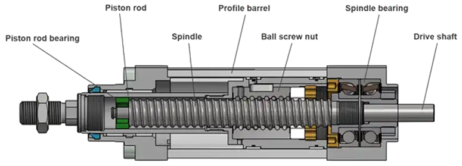 --- an example of a simple electric actuator converts **electric current** or **voltage** → mechanical motion --- <img src="img/actuation/robotic_arm.gif" width=900> Note: - They are responsible for ensuring a device such as a robotic arm is able to move when electric input is provided. - A car uses actuators in the engine control system to regulate air flaps for torque and optimization of power, idle speed and fuel management for ideal combustion. --- an actuator requires, --- an actuator requires, - a control device → provides control signal --- actuator requires, - a control device → provides control signal - a source of energy --- actuator based on → **displacement** --- actuator based on → **displacement** - linear (motors) - rotary (motors) --- ### another broad classification --- ### another broad classification 1. **continuous**-drive actuators --- ### another broad classification 1. **continuous**-drive actuators 2. **incremental**-drive actuators --- ### another broad classification 1. **continuous**-drive actuators → [brushed motors](#brushed-dc-motors) 2. **incremental**-drive actuators → [brushless motors](#stepper-motors) --- ### **Brushed** DC motors --- ### **Brushed** DC motors move **continuously** → DC voltage applied to terminals --- <!-- .slide: data-background="white" --> ### **Brushed** DC motors move **continuously** → DC voltage applied to terminals 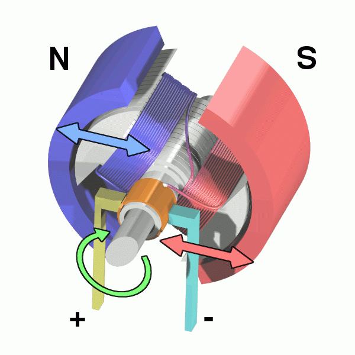 --- ### **stepper** motors --- ### **stepper** motors **brushless** motors → rotate in series of small/discrete angular steps --- <!-- .slide: data-background="white" --> ### **stepper** motors **brushless** motors → rotate in series of small/discrete angular steps <img src="img/actuation/StepperMotor-Wiki-large.gif" width="700"> Note: Animation of a simplified stepper motor turned on, attracting the nearest teeth of the gear-shaped iron rotor - with the teeth aligned to electromagnet 1, they will be slightly offset from right electromagnet (2) - Frame 2: The top electromagnet (1) is turned off, and the right electromagnet (2) is energized, pulling the teeth into alignment with it. This results in a rotation of 3.6° in this example. - Frame 3: The bottom electromagnet (3) is energized; another 3.6° rotation occurs. - Frame 4: The left electromagnet (4) is energized, rotating again by 3.6°. When the top electromagnet (1) is again enabled, the rotor will have rotated by one tooth position; since there are 25 teeth, it will take 100 steps to make a full rotation in this example. --- <!-- .slide: data-background="white" --> ### **stepper** motors **brushless** motors → rotate in series of small/discrete angular steps <img src="img/actuation/StepperMotor-Wiki-large.gif" width="700"> can be set to any given step position → **no need for position sensor** --- ### **stepper** motors can be set to any given step position → **no need for position sensor** step position → rapidly increased or decreased → continuous rotation --- ### **stepper** motors converting **train of square wave pulses → precise increment** --- ||| |-----|-----| |digital signals | <scb>0</scb> and <scb>1</scb>| |analog signals| **continuous** range of values | || --- 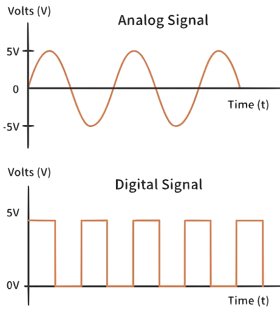 --- --- remember **adc**? 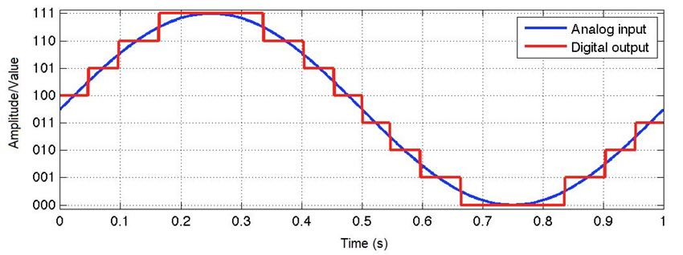 --- remember **adc**? need opposite → convert **digital** to **analog** --- ## digital-to-analog convertor (DAC) - many devices have internal DACs - DAC is **expensive** - takes up a lot of silicon on chip --- better method? --- ## Pulse Width Modulation (PWM) --- ## Pulse Width Modulation (PWM) method to **control analog devices** → using **digital** signals --- ## Pulse Width Modulation (PWM) method to **control analog devices** → using **digital** signals - output "**analog-like signal**" from microcontroller --- ## Pulse Width Modulation (PWM) method to **control analog devices** → using **digital** signals - output "**analog-like signal**" from microcontroller - control motors, lights, actuators --- ### "**analog-like signal**" - **not** a true analog signal - digital one modified to **behave** like one --- a **rectangular wave** with varying "duty cycles" and periods --- a **rectangular wave** with varying "duty cycles" and periods 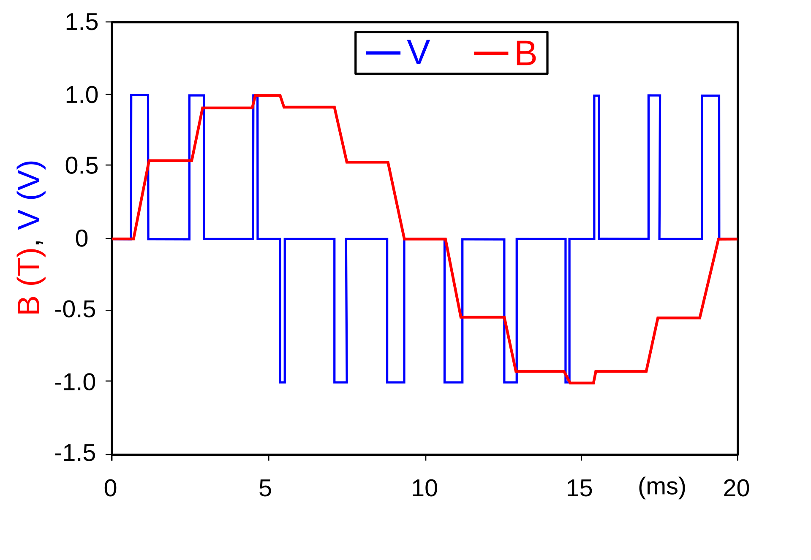 Note: -an idealized inductor is driven by a set of voltage pulses (in <font color="blue">blue</font>) that result in a sine-wave-like current (in <font color="red">red</font>) --- ## Pulse Width Modulation (PWM) controlling **average** power/amplitude delivered by → electrical signal --- ## Pulse Width Modulation (PWM) controlling **average** power/amplitude delivered by → electrical signal - controlled by switching supply <scb>0%</scb> ↔ <scb>100%</scb> --- ## Pulse Width Modulation (PWM) controlling **average** power/amplitude delivered by → electrical signal - controlled by switching supply <scb>0%</scb> ↔ <scb>100%</scb> - **faster** than → time for load to change --- example | consider a fan 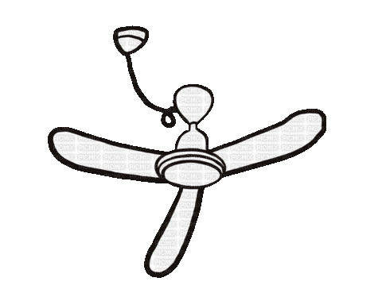 --- example | consider a fan | **two** options <div class="multicolumn"> <div> </div> <div> |switch state| fan **moves** to| |------------|-----------------| | <scb>on</scb> | <scb>100%</scb> speed| | <scb>off</scb> | <scb>0%</scb> speed| || </div> </div> --- example | consider a fan | **two** options <div class="multicolumn"> <div> </div> <div> |switch state| fan **moves** to| |------------|-----------------| | <scb>on</scb> | <scb>100%</scb> speed| | <scb>off</scb> | <scb>0%</scb> speed| || </div> </div> I want the fan to operate at <scb>50%</scb> → possible? --- example | consider a fan | **two** options I want the fan to operate at <scb>50%</scb> → possible? <div class="multicolumn"> <div> |switch state| fan **moves** to| |------------|-----------------| | <scb>on</scb> | <scb>100%</scb> speed| | <scb>off</scb> | <scb>0%</scb> speed| || </div> <div> - turn <scb>on</scb> switch </div> </div> --- example | consider a fan | **two** options I want the fan to operate at <scb>50%</scb> → possible? <div class="multicolumn"> <div> |switch state| fan **moves** to| |------------|-----------------| | <scb>on</scb> | <scb>100%</scb> speed| | <scb>off</scb> | <scb>0%</scb> speed| || </div> <div> - turn <scb>on</scb> switch - wait → fan (close to) <scb>50%</scb> </div> </div> --- example | consider a fan | **two** options I want the fan to operate at <scb>50%</scb> → possible? <div class="multicolumn"> <div> |switch state| fan **moves** to| |------------|-----------------| | <scb>on</scb> | <scb>100%</scb> speed| | <scb>off</scb> | <scb>0%</scb> speed| || </div> <div> - turn <scb>on</scb> switch - wait → fan (close to) <scb>50%</scb> - turn it <scb>off</scb> </div> </div> --- example | consider a fan | **two** options I want the fan to operate at <scb>50%</scb> → possible? <div class="multicolumn"> <div> |switch state| fan **moves** to| |------------|-----------------| | <scb>on</scb> | <scb>100%</scb> speed| | <scb>off</scb> | <scb>0%</scb> speed| || </div> <div> - turn <scb>on</scb> switch - wait → fan (close to) <scb>50%</scb> - turn it <scb>off</scb> - slows down → turn <scb>on</scb> again </div> </div> --- example | consider a fan | **two** options I want the fan to operate at <scb>50%</scb> → possible? <div class="multicolumn"> <div> |switch state| fan **moves** to| |------------|-----------------| | <scb>on</scb> | <scb>100%</scb> speed| | <scb>off</scb> | <scb>0%</scb> speed| || </div> <div> - turn <scb>on</scb> switch - wait → fan (close to) <scb>50%</scb> - turn it <scb>off</scb> - slows down → turn <scb>on</scb> again - repeat **fast** → close to <scb>50%</scb> </div> </div> --- example | consider a fan | **two** options I want the fan to operate at <scb>50%</scb> → possible? <div class="multicolumn"> <div> |switch state| fan **moves** to| |------------|-----------------| | <scb>on</scb> | <scb>100%</scb> speed| | <scb>off</scb> | <scb>0%</scb> speed| || </div> <div> - turn <scb>on</scb> switch - wait → fan (close to) <scb>50%</scb> - turn it <scb>off</scb> - slows down → turn <scb>on</scb> again - repeat **fast** → close to <scb>50%</scb> </div> </div> <br> the faster you do this → closer to desired value of <scb>50%</scb> --- example | consider a fan | **two** options I want the fan to operate at <scb>50%</scb> → possible? <div class="multicolumn"> <div> |switch state| fan **moves** to| |------------|-----------------| | <scb>on</scb> | <scb>100%</scb> speed| | <scb>off</scb> | <scb>0%</scb> speed| || </div> <div> - turn <scb>on</scb> switch - wait → fan (close to) <scb>50%</scb> - turn it <scb>off</scb> - slows down → turn <scb>on</scb> again - repeat **fast** → close to <scb>50%</scb> </div> </div> <br> the faster you do this → closer to desired value of <scb>50%</scb> (aka **setpoint**) --- I don't recommend doing this... 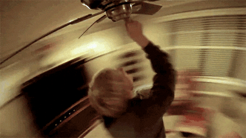 --- ### PWM wave 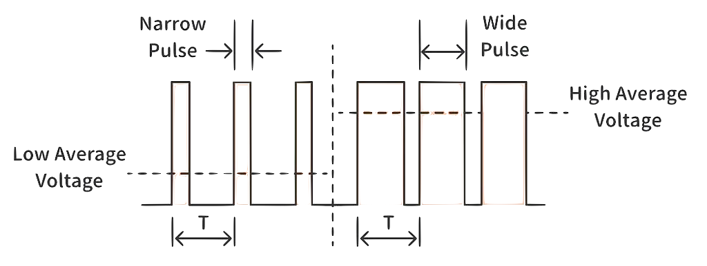 --- ### PWM wave ||| |------|------| |<scb>on</scb>-<scb>off</scb> switching| **pulse**| --- ### PWM wave ||| |------|------| |<scb>on</scb>-<scb>off</scb> switching| **pulse**| |duration → pulse at **high** state| **pulse width**| --- ### PWM wave ||| |------|------| |<scb>on</scb>-<scb>off</scb> switching| **pulse**| |duration → pulse at **high** state| **pulse width**| | $T$ | **period** | || --- ### PWM wave | **properties** --- ### PWM wave | **properties** two important properties 1. [duty cycle](#duty-cycle) 2. [period](#pwm-period) --- ## Duty Cycle --- ## Duty Cycle recall that logic **high** → <scb>on</scb> Note: - or `off` depending on the system, but pick one for consistency --- ## Duty Cycle recall that logic **high** → <scb>on</scb> duty cycle → represents <scb>on</scb> time --- ## Duty Cycle > duty cycle describes the proportion of 'on' time to the regular interval or 'period' of time --- ## Duty Cycle > duty cycle describes the proportion of 'on' time to the regular interval or 'period' of time represented as **percentages** --- ## Duty Cycle | **examples** 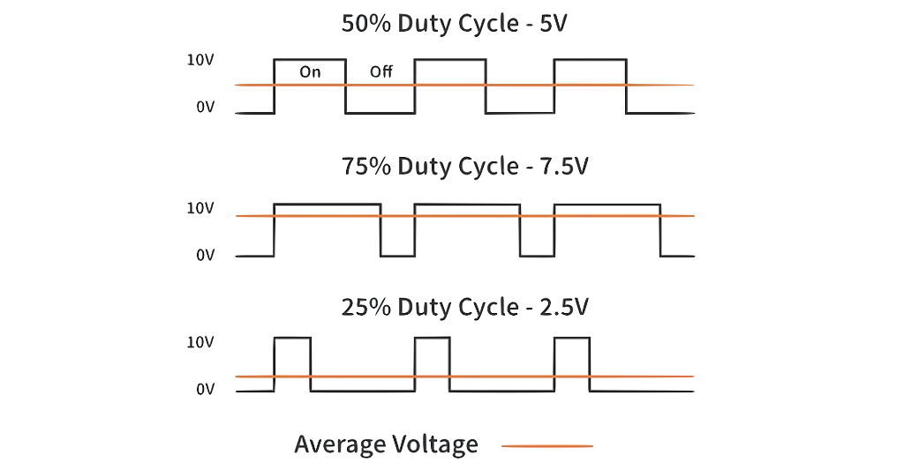 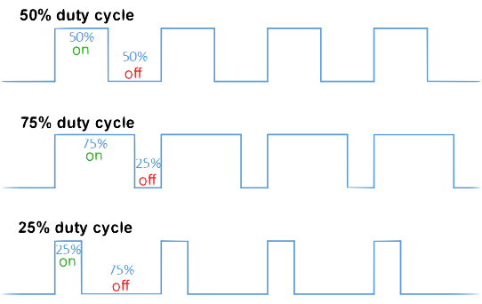 --- ## Duty Cycle | **calculations** --- ## Duty Cycle | **calculations** $$D = \frac{T_{on}}{T} * 100$$ --- ## Duty Cycle | **calculations** <div class="multicolumn"> <div> $$D = \frac{T_{on}}{T} * 100$$ </div> <div> ||| |----|----| | **D** | duty cycle (percentage)| | $T_{on}$ | duration → signal is <scb>on<scb>| | $T$ | total period| || </div> </div> --- ## Duty Cycle | **calculations** consider → periodic pulse wave, $f(t)$, 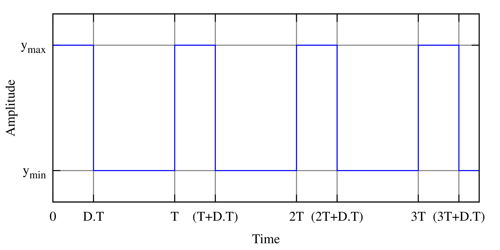 --- ## Duty Cycle | **calculations** consider → periodic pulse wave, $f(t)$, <div class="multicolumn"> <div> </div> <div> ||| |----|----| |low value | $y_\text{min}$ | |high value | $y_\text{max}$ | | duty cycle | $D$ | || </div> </div> --- ## Duty Cycle | **calculations** consider → periodic pulse wave, $f(t)$, <div class="multicolumn"> <div> </div> <div> **average** value of wave is, $$\bar{y} = \frac{1}{T}\int^T_0f(t)\ dt$$ </div> </div> --- ## Duty Cycle | **calculations** consider → periodic pulse wave, $f(t)$, <div class="multicolumn"> <div> </div> <div> $f(t)$ → **pulse** wave ||| |-----|-----| | $y_{max}$ | $0<t<D.T$| | $y_{min}$ | $D.T<t<T$ | || </dv> </div> --- ## Duty Cycle | **calculations** we can expand, $$\bar{y} = \frac{1}{T}\int^T_0f(t)\ dt$$ --- ## Duty Cycle | **calculations** $$ \bar{y} = \frac{1}{T}\int^T_0f(t)\ dt $$ $$ = \frac{1}{T} \left(\int_0^{DT} y_\text{max}\ dt + \int_{DT}^T y_\text{min}\ dt\right) $$ --- ## Duty Cycle | **calculations** $$ \bar{y} = \frac{1}{T}\int^T_0f(t)\ dt $$ $$ = \frac{1}{T} \left(\int_0^{DT} y_\text{max}\ dt + \int_{DT}^T y_\text{min}\ dt\right) $$ $$ \bar{y} = \frac{1}{T} \left(D \cdot T \cdot y_\text{max} + T\left(1 - D\right) y_\text{min}\right) $$ --- ## Duty Cycle | **calculations** $$\bar{y} = D\cdot y_\text{max} + \left(1 - D\right) y_\text{min}$$ --- ## Duty Cycle | **calculations** $$\bar{y} = D\cdot y_\text{max} + \left(1 - D\right) y_\text{min}$$ can now compute → how long signal at ($y_{max}$, $y_{min}$) --- ### PWM Period determines → number of times signal **repeats per second** depends on **application** --- ### PWM Sampling Theorem --- ### PWM Sampling Theorem > number of pulses in the waveform is equal to the number of Nyquist samples --- ### PWM Sampling Theorem > number of pulses in the waveform is equal to the number of Nyquist samples Nyquist rate → **twice** the highest frequency --- ### PWM Sampling Theorem > number of pulses in the waveform is equal to the number of Nyquist samples Nyquist rate → **twice** the highest frequency directly related to → [Nyquist-Shannon Sampling Theorem](https://autonomy-course.github.io/textbook/autonomy-textbook.html#adc-sampling-rate) --- ### PWM example | servo motor --- ### PWM example | servo motor control servos/RC servos → small, cheap servomotors/actuators 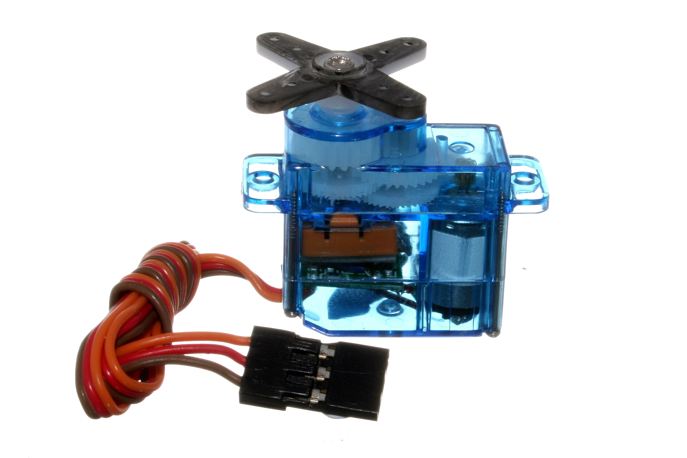 --- ### PWM example | servo motor control servos/RC servos → small, cheap servomotors/actuators used for radio control and small-scale robotics --- ### PWM example | servo motor control - controlled by → PWM signal --- ### PWM example | servo motor control - controlled by → PWM signal - width/duty-cycle of pulse → position of motor --- ### PWM example | servo motor control 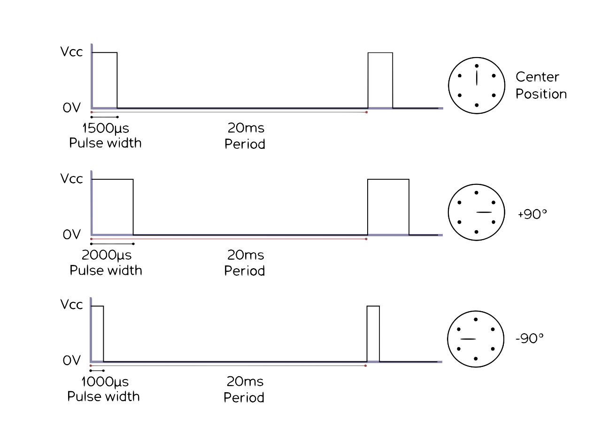 --- ### PWM Generation in Microcontrollers - **built-in PWM components** - timer ICs --- ### PWM Generation in Microcontrollers | _e.g.,_ **Arduino** generating PWM → **simple lines of code**! ``` analogWrite(pin, value) ``` Note: - that **not all pins** of an Arduino can generate a PWM signal. In the case of Arduino Uno, there are only 6 I/O pins (3,5,6,9,10,11) that support PWM generation and they are marked with a tilde (~) in front of their pin number on the board. --- ### PWM Generation in Microcontrollers | _e.g.,_ **Arduino** 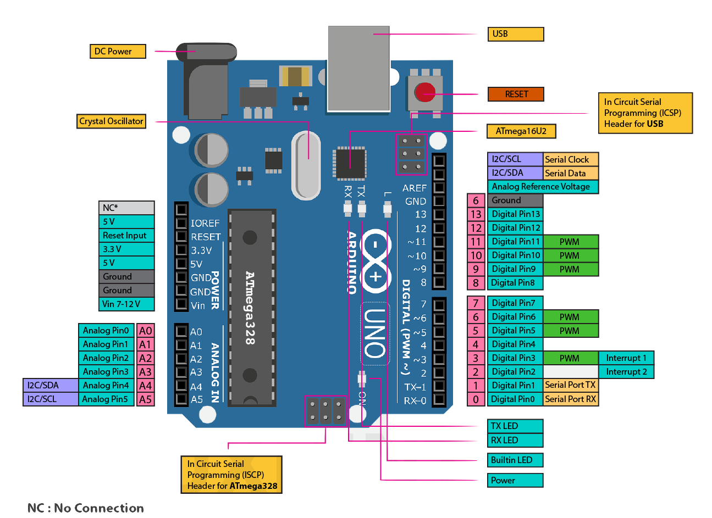 --- ### PWM Generation in Microcontrollers | _e.g.,_ **Arduino** various duty cycle examples ``` analogWrite(PWM_PIN, 64); // 25% Duty Cycle or 25% of max speed analogWrite(PWM_PIN, 127); // 50% Duty Cycle or 50% of max speed analogWrite(PWM_PIN, 191); // 75% Duty Cycle or 75% of max speed analogWrite(PWM_PIN, 255); // 100% Duty Cycle or full speed ``` --- ### PWM Generation in Microcontrollers | _e.g.,_ Raspberry Pi --- ### PWM Generation in Microcontrollers | _e.g.,_ Raspberry Pi multiple **GPIO pins** → for generating PWM signals 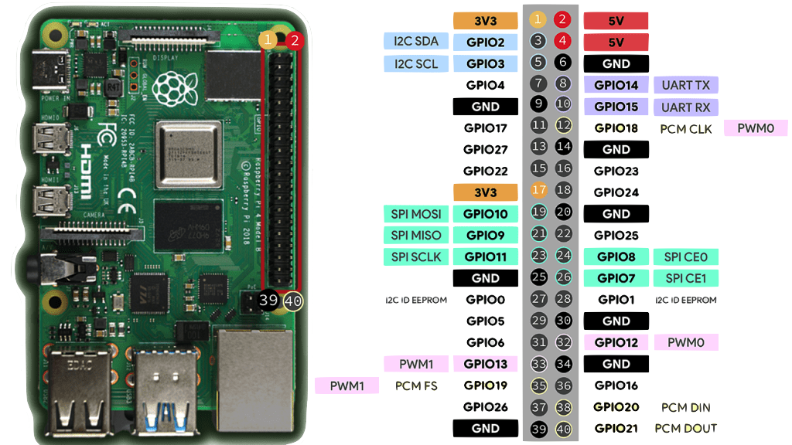 --- ### PWM Generation in Microcontrollers | _e.g.,_ Raspberry Pi consider this [code](https://circuitdigest.com/microcontroller-projects/raspberry-pi-pwm-tutorial) → controlling LED brightness ```python[0|1|4-5|6|9-11|12-14] import RPi.GPIO as IO #calling header file which helps us use GPIO’s of PI import time #calling time to provide delays in program IO.setwarnings(False) #do not show any warnings IO.setmode (IO.BCM) #we are programming the GPIO by BCM pin numbers. (PIN35 as ‘GPIO19’) IO.setup(19,IO.OUT) # initialize GPIO19 as an output. p = IO.PWM(19,100) #GPIO19 as PWM output, with 100Hz frequency p.start(0) #generate PWM signal with 0% duty cycle while 1: #execute loop forever for x in range (50): #execute loop for 50 times, x being incremented from 0 to 49. p.ChangeDutyCycle(x) #change duty cycle for varying the brightness of LED. time.sleep(0.1) #sleep for 100m second for x in range (50): #execute loop for 50 times, x being incremented from 0 to 49. p.ChangeDutyCycle(50-x) #change duty cycle for changing the brightness of LED. time.sleep(0.1) #sleep for 100m second ```